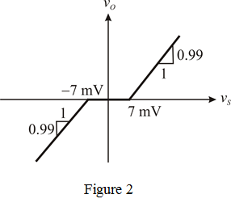

Step 1:
Refer to the circuit diagram of complementary BJT follower in Figure P10.22 (a) in the textbook.
Refer to the transfer characteristics of complementary BJT follower in Figure P10.22 (b) in the textbook.
The BJT follower is driven by the output of a differential amplifier of gain 100. Differential amplifier positive input terminal is connected to the input signal source. Differential amplifier negative-input terminal is connected to the emitters of the follower.
Draw the desired circuit diagram.

Step 2:
The transfer characteristics, the output is zero during the input range and hence is called the “dead band”.
This dead band leads to the crossover distortion and due to the feedback; the dead band will be narrowed by a factor equal to the amount of feedback.
Since, the amount of feedback is  and hence the dead band will be narrowed by a factor equal to
and hence the dead band will be narrowed by a factor equal to  .
.
The feedback factor  is,
is,
But, from the circuit, it is clear that .
That implies,
Step 3:
Therefore,
Given,
Hence,
Hence the dead band will be narrowed by a factor equal to  .
.
We have the input range as
Now due to the feedback, the input is and the range of  is:
is:
Hence the limits of the dead band are.
Step 4:
The slope of the steepest segment is,
Since the slope of the steepest segment is equal to the closed loop gain or gain of the feedback amplifier, hence
Therefore, the gains outside the dead band are: 
Step 5:
Draw the transfer function characteristics,

is shown in Figure 2.

Thus, transfercharacteristics of resulting feedback amplifier is drawn.